DSim is the simulation engine that comes with VisualCommander. The DSim engine allows you to create simulations from components, much like you build a physical device from components. These components are arranged in a hierarchy so that you can have multiple objects each one built up from a series of components. VisualCommander will show telemetry from the simulation in the same hierarchy in the data tree. Each component can have dynamical states and each component can communicate with other components making it possible to build very complex simulations.
DSim simulations can be run inside or outside of VisualCommander. To run a simulation outside of VisualCommander, use the accompanying SimBuilder application. See the SimBuilder help documentation for more information.
The following sections discuss how to use DSim in conjunction with VisualCommander. The discussion assumes you have prebuilt components (which are written in C/C++).
In order to run a DSim simulation from within VisualCommander, we need to create a new data session with DSim as the data source.
Press CMD+D to pull up the Data window, and click on the Sessions tab. Press the "+" button in the lower left corner to create a new session. Choose a name for your session, and set the source type to be "DSim", as shown in the screenshot below. Note, if the "Quick Start" box is checked, the simulation will start immediately after it is configured.
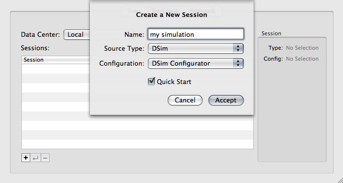
At this point, VisualCommander has a blank session. The next step is to supply configuration data to the session. Because this is a DSim simulation, we configure it by selecting a simulation setup file. A new "Configure" button will be displayed in the bottom right corner, as shown below. Press this button to select a setup file.
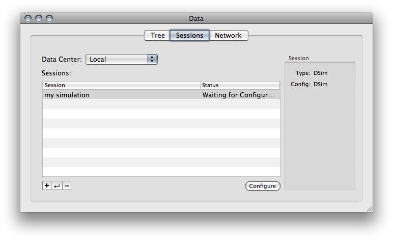
VisualCommander provides some example setup files, located in the following folder:
/Library/Application Support/VisualCommander/Model Libraries/
You can select any .ds2 file you wish. To follow along with this tutorial, choose the "second_order.ds2" file.
This will run a very basic simulation of a second order dynamic system.
Upon selecting the setup file, a new window will appear prompting you to verify your selection. Press the "Send Configuration" button.

Note that you can avoid repeating the above manual steps by using a "Session Manager" plugin or the interface Inspector Panel. Click to learn more.
If you checked the "QuickStart" box, the simulation will already be running. Otherwise, in the "Sessions" tab of the Data window, the "Configure" button will now have been replaced by a "Start" button. Press it to begin running the simulation.
Now click on the "Tree" tab of the Data window. This provides a hierarchical tree of all the currently available data sources. You will see an entry here with the session name that you chose. In this case we have named it "my simulation". Click on the name to expand it.
The expanded list will have two volumes: "second_order" and "Simulation". The "second_order" volume corresponds to the DSim object named "second_order", which runs the second order dynamic simulation. In general, a single DSim simulation can have multiple objects, which would all appear as separate volumes in this data hierarchy. In this case, it has only one object.
The "Simulation" volume is common to all DSim simulations. It contains information related to the simulation timing, speed, and run status.
Click on the "second_order" and "Simulation" volumes to expand them and view their contents. The entries in each volume are called "data points". The ones shown in italics are commands.
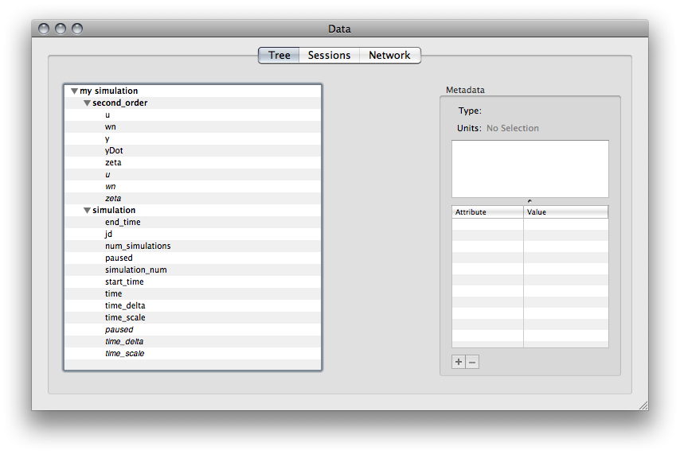Begin with a blank interface. Press CMD+N to create a new blank interface.
Drag the data point "y" from the "second_order" volume to the interface. This will create a raw data display, showing the value of the data point.
Now drag the command "u" from the "second_order" volume to the interface. This will create a command display, enabling you to set the value of the data point.
The screenshot below shows the raw data and command displays in an interface window. You are currently in edit mode, which means you can edit the appearance of the graphical plugins on the interface page. Switch from edit mode to run mode (hit CMD+Shift+R). Now you can USE the command plugin. Type in a value in the "u" command plugin and hit the "Send" button. The value of the output "y" will track the input "u" according to the second order system dynamics.
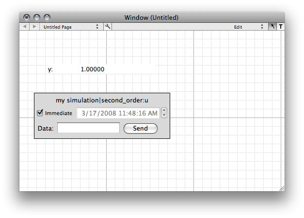For a more illustrative example, you can open the "second_order.vci" interface, which includes more commands, data displays, and a plot of the second order system.
Click here to learn more.
DSim is a hierarchical, object-oriented simulation framework. What this means that in practical terms is that a simulation is composed of instantiations of a set of reusable models, and that these objects can then be arranged in a hierarchical tree. For example, we might have an object called Satellite that represents the physical body of a spacecraft. One of its child objects would be the object for its thruster. We might also have another top-level object representing the Earth; this separate top-level object would be part of the simulation but would be at the same 'level' as the Satellite- neither would be hierarchically above the other. The following figure has an example of how this layout would look.
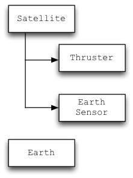Objects are instantiations of models. A model is a class in C++ that derives from the appropriately named dsim_model class in the DSim framework. Models are generally organized in libraries; for instance, many of the existing PSS models are contained in a library called "Spacecraft". DSim knows how to load these external libraries and create objects from the models contained within. The model describes all of the attributes that objects instantiated from the model have: position, velocity, temperature, etc. Each model can have an entirely different set of variables associated with it. Each model also provides the code that updates the variables as the simulation progresses, both by providing derivatives of integrated variables (DSim then does the actual integration) and directly updating non-integrated variables that still need to change each timestep. Each object instantiated from a particular model thus has the same attributes and dynamics, but the particular values will be different in each case.
The following figure shows the class hierarchy in the Spacecraft library.
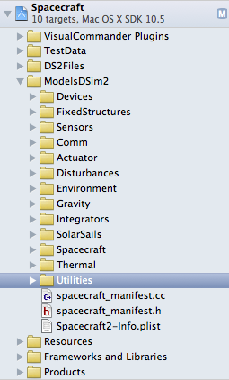As an example, lets return to our Satellite object described above. In this case, the object might be instantiated from the model rigid_body inside the Spacecraft library. This particular instantiation would have a specific position and velocity within the simulation. At the same time, if our simulation had another satellite in it, that other satellite might also be instantiated from the same model and library. In this case, the second satellite would have a different position and velocity, but the dynamics controlling how those variables updated would be the same in each case.
Models and libraries by themselves do not make up simulations. Rather, simulations make use of the models to instantiate collections of objects that are then simulated. The setup and relationships of these objects, as well as some simulation parameters and the initial values for the objects' variables, are specified in a simulation setup file, also known as a ds2 file because of the extension used for such files. These files are plain-text XML files; however, they are rarely edited by hand. Instead, these setup files are built using DSim Manager.
DSim Manager is an application which provides a user-friendly drag-and-drop environment for building simulations. All of the available models are listed in a Manifest window, and these models can then be dragged into a simulation hierarchy to instantiate an object from that model. Each object can then be edited to change its name, initial values, and perform any custom set for the object.
Once a simulation has been set up, DSim Manager can also be used to test simulations, with output from the simulation being written to configured log files to be analyzed and verified.
A dynamical system is built up hierarchically much like the actual hardware. A spacecraft hierarchy is shown in the following figure. The gimbal mount has the greatest depth. Objects get all the state information from their parent.
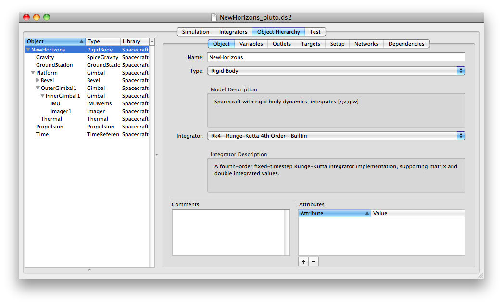Each object has an integrator for any of its integrated states. As discussed below DSim automatically integrates all objects and handles their dependencies automatically.
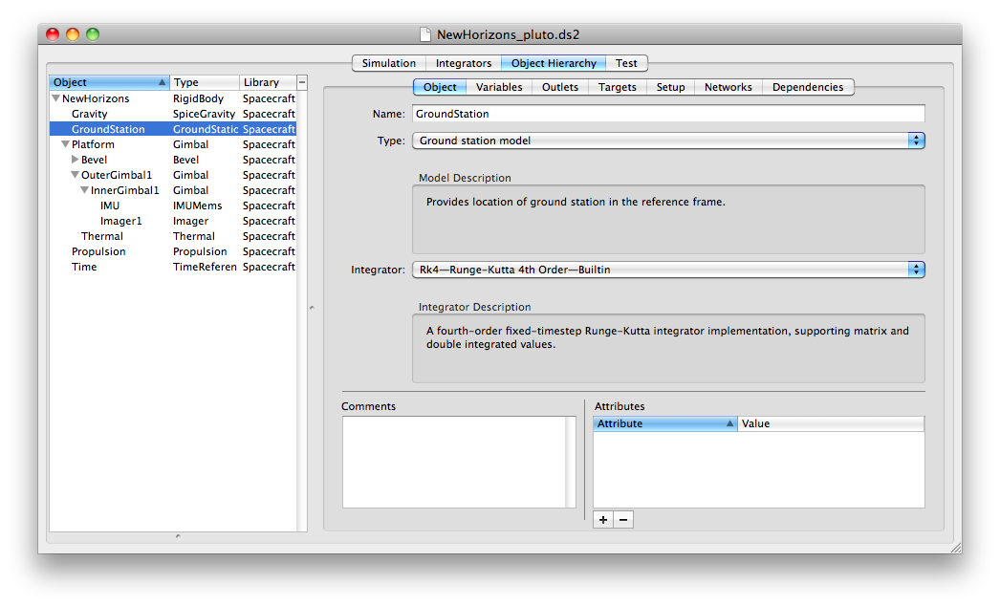Outlets are a method of connecting objects. An outlet can be connected with any objects output. Dependencies are automatically handled when passing outlet data.
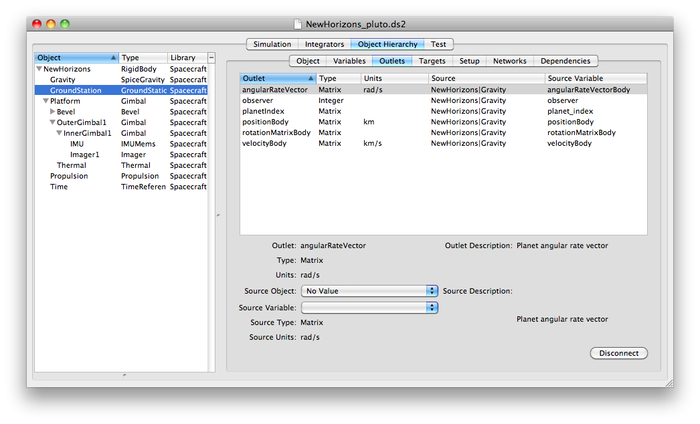Any variable specified can be initialized in DSimManager as shown below.
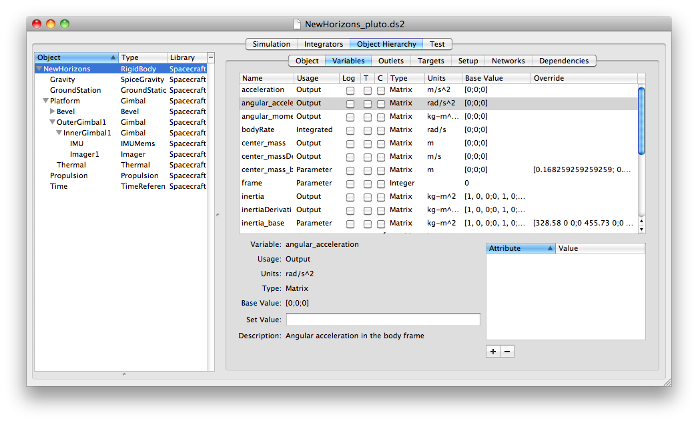As the physical simulation, DSim is strongly deterministic and does not allow for the more complicated programming structures available within ControlDeck. Models implement certain methods to update variables at specific times. The entire simulation operates on a single timestep, and the simulation engine will step through a specific sequence of function calls within a loop. You can investigate the DSim API for more information on what the functions do, but the structure of the loop is shown below.
DSim Simulation Loop
It is important to note that each object within the simulation is considered to be independent unless a dependency is created between two objects. When "foo" is marked as dependent upon "bar", DSim will ensure that, at each step of the simulation, methods are called on "bar" before they are called on "foo". This allows you to ensure that objects update in the proper order. If there are no dependencies between two objects, you cannot rely on the relative order of function calls between those objects.
All DSim objects interact with DSim variables in order to implement functionality and affect simulation step. These variables are distinct from the general member variables of the C++ programming language; instead, they are instances of the dsim_variable objects. They represent inputs, outputs, and states of the objects being simulated.
It's important to note that DSim only makes a single distinction when it comes to variables: whether or not they are integrated. Integrated variables must be treated specially by the framework. However, there are a number of other possible variable types: inputs, outputs, parameters, etc. These other variable types are there simply to make the model more self-documenting, especially when using DSim Manager to construct a simulation.
Models create their own variables, and can get and set their values freely. Models may also request the variables that are created by other models; once these "remote" variables have been requested, the model can interact with them the same way that it can interact with "local" (self-created) variables. It is up to the model writer to avoid improperly setting the value of a remote object's variable.
Models must be aware of whether or not the variables with which they are interacting are co-integrated or not. A model, having requested a variable from another object, may either enable or disable co-integrated mode for the variable. While DSim is performing the integration loop within a timestamp, an integrated variables value may be changing over the course of the integration according to the integrator being used by that variable's creating model. When an object is looking at a variable in co-integrated mode, that object will always see the most recent value of the variable, and will see these changes over the course of integration. However, when an object is looking at a variable that is not in co-integrated mode, it will always see the value of the variable immediately prior to the beginning of the integration loop; it will not see updates over the course of integration.
Objects using different integrators should always be careful to avoid co-integrated mode on variables from the remote object, since updates during the course of integration may not have matching times or meaning.
Most inter-object communication within DSim happens by way of setting and reading variables. However, there are times when this is not the most appropriate form of communication. When something better is needed, messages can be used.
Messages allow an object to send a value, with a message name, to another object. The best example of this from the base DSim is the application of forces and torques to the built-in dsim_rigid_body model. Objects which wish to apply a force to a dsim_rigid_body object send it an apply_force message, along with the force that they wish to apply. The dsim_rigid_body object records and aggregates all of these forces, and then applies them the next time its rhs() function is called to compute state derivatives. Any number of other objects can in this way apply forces to a single object. The message passing, and the recipient's handling of it, is immediate and synchronous: the recipient will have handled the message before the send_message call returns.
Messages may also receive return values. The message handler that is called when a message is received has the option of returning a value back to the sender. For instance, if object A applies a force to object B, object B might choose to return a force that it, in turn, applies to object A.
DSim models are designed to be flexible and reusable. A side effect of this design philosophy is that in many instances, significant details of the model's functionality are not available until runtime, and the model must be designed to retrieve those details from the DSim framework. One of the most common examples of this, beyond parameter variables and initial values, is the use of targets.
Targets allow connections between objects to be specified within the simulation setup file, rather than hard-coded into the model. For example, consider a simple mass-spring simulation where we have two models: one representing the mass, and one representing the spring. In developing the model for the spring, we'd like it to be reusable; at the same time we know we need to send a message to the mass at each timestep to apply the appropriate force. How can we accomplish this?
The correct method is via a target. The spring model creates the target during initialization. The user who sets up the simulation, then, sees that the spring has a target and connects it to the mass object. At runtime, then, the spring looks up the position variable at whatever object the target points to, and simply sends its apply_force message to the same: the code doesn't care where the variable is located or where message is going; it just knows that its going to some other object that has a position variable and can respond to an apply_force message. Basically, you should never hard-code paths or object names into your model code: instead, use targets.
While the example above has a target pointing to a single destination, it's possible for a target to be multidirectional, in which case the target actually points to a set of objects rather than a single one. The general principle is the same, but the code would be written to iterate over the set of objects pointed to by the target rather than simply getting a single value from the target. This might be used to help model a broadcast communication system, for instance.
Networks allow you to connect multiple modules together so simulate power, thermal, electrical and other kinds of networks.
Connections are directed. In your power object that's managing the network, it iterates through the connections, looks up the object that is the destination of the connection, and asks that destination object for its "power" variable. Given that, you need to make sure that your dsim setup file has, for each of those connections, the power object as the *source* and the other object, the one in the network, as the destination.
The following screenshot from Xcode shows the initialization code.
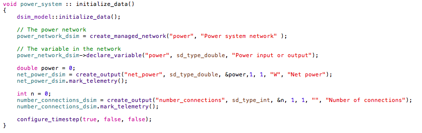
The following figure shows the power network pane.
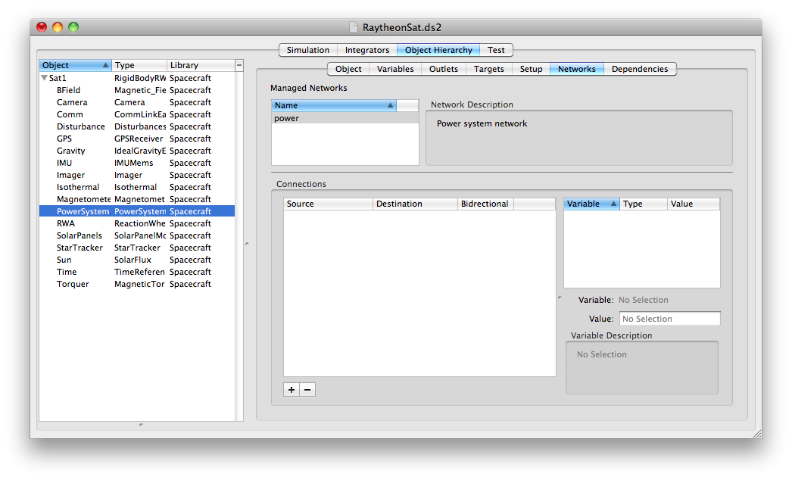
The following figure shows the power network pane with the connections. This sends power to the power_system.
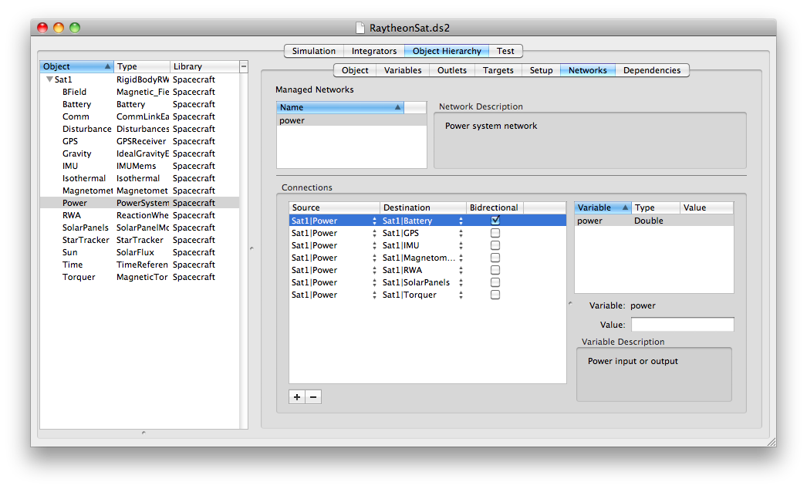
The following screenshot from Xcode shows the update code.
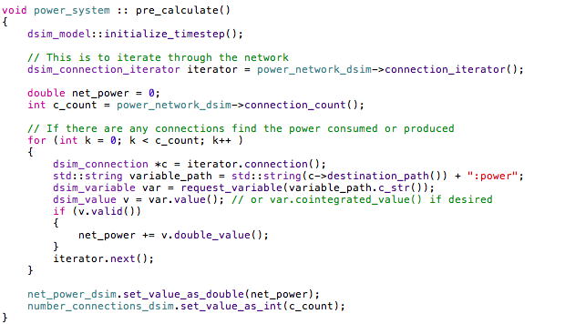
DSim2 allows for object templates to be created. A template is a group of objects that make a logical unit, such as a vehicle, that can be duplicated. An entire template can be dropped into a simulation with all targets and connections intact. Modifying the template allows simultaneous modification of all of the related components already placed in the simulation. This process greatly simplifies the duplication of assets in any scenario.